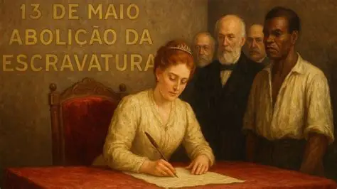

A assinatura da Lei Áurea, em 13 de maio de 1888, marcou o fim oficial da escravidão no Brasil, tornando-o o último país do continente americano a abolir o sistema. A conquista foi fruto de intensa pressão internacional, leis gradualistas, forte mobilização abolicionista e, sobretudo, da resistência dos próprios negros escravizados.
Embora tenha libertado centenas de milhares de pessoas juridicamente, a Lei Áurea não veio acompanhada de reestruturação socioeconômica ou de reparação. Sem acesso à terra, à educação ou a empregos formais, a população recém-liberta enfrentou o racismo estrutural e a marginalização, enquanto o Estado substituía sua mão de obra por imigrantes europeus.
Questão 1
Sobre o processo de abolição e a
situação da população negra no pós-abolição, é correto afirmar que:
A) O governo imperial garantiu a distribuição imediata de terras
agrícolas a todos os libertos.
B) A inserção dos negros no mercado
de trabalho urbano ocorreu de forma totalmente igualitária.
C) A
abolição foi fruto exclusivo de um decreto pacífico da Coroa, sem
participação popular.
D) A população liberta enfrentou forte
exclusão social, sendo empurrada para periferias e subempregos pela
falta de políticas de integração.
Questão 2
A principal forma de luta dos
escravizados contra o sistema nas décadas finais do Império foi:
A) A criação de partidos políticos no parlamento imperial para eleger
abolicionistas.
B) A aliança militar com países vizinhos para
invadir o Brasil.
C) A organização de fugas em massa, formação de
quilombos urbanos e rurais e o boicote ao trabalho nas fazendas.
D)
A aceitação pacífica das leis gradualistas confiando na benevolência dos
senhores.